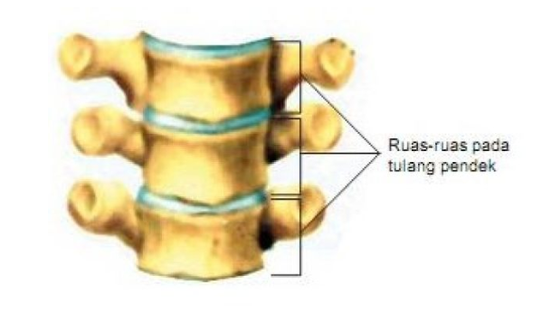
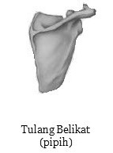
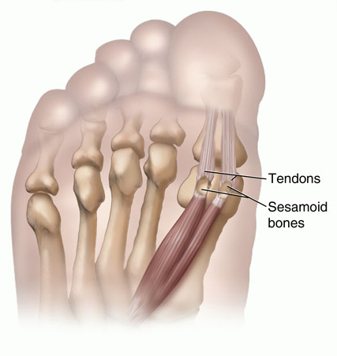

WEB PEMBELAJARAN
A. Tulang Panjang

Tulang panjang memiliki rongga dan bertanggung jawab sebagai penopang kerangka tubuh. Sebagai contoh tulang panjang yaitu sebagai berikut:
1. Tulang paha
2. Tulang betis
3. Tulang kering
4. Tulang telapak kaki
5. Tulang telapak tangan
6. Jari-jari
7. Tulang yang membentuk lengan
B.Tulang Pendek
Ukurannya kira-kira sepanjang lebar dan berbentuk seperti dadu atau bundar. Tulang ini yang memungkinkan Anda untuk bergerak. Sebagai contoh tulang pendek antara lain adalah tulang yang membentuk pergelangan kaki (tarsal) dan tulang membentuk pergelangan tangan (carpal).
C.Tulang Pipih
Tulang pipih memiliki ukuran yang sangat tipis, tapi ukuran dan bentuknya sangat bervariasi. Tulang ini memiliki area permukaan untuk melindungi otot yang terdapat pada tulang tersebut. Contoh tulang pipih antara lain tulang rusuk (rib), tulang tengkorak (cranial), tulang dada (sternum), dan tulang belikat (scapula).
D.Tulang Tak Beraturan

Tulang tidak teratur memiliki bentuk yang tidak sesuai dengan tulang panjang, pendek, atau pipih. Sebagai contoh tulang tidak teratur adalah berikut:
1. Tulang belakang
2. Tulang sacrum
3. Tulang ekor
4. Tulang baji
5. Tulang pipi
6. Tulang ethmoid
E.Tulang Sesamoid
Tulang sesamoid adalah tulang yang tertanam di tendon (jaringan ikat yang menghubungkan jaringan otot dengan tulang). Tulang bulat kecil ini umumnya ditemukan di tendon tangan, lutut, dan kaki. Tulang sesamoid berfungsi untuk melindungi tendon dari tekanan pada sendi dan meningkatkan efisiensi sendi. Salah satu contoh tulang ini adalah tempurung lutut (patella).